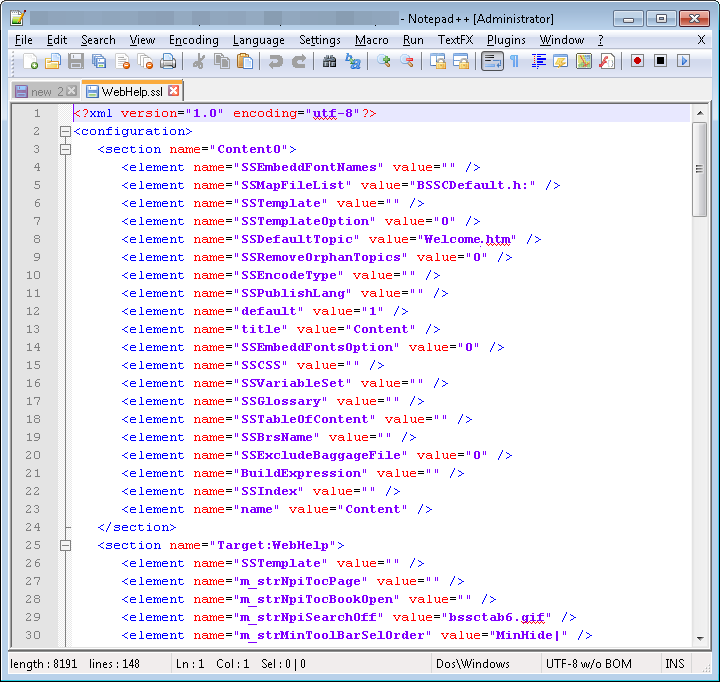
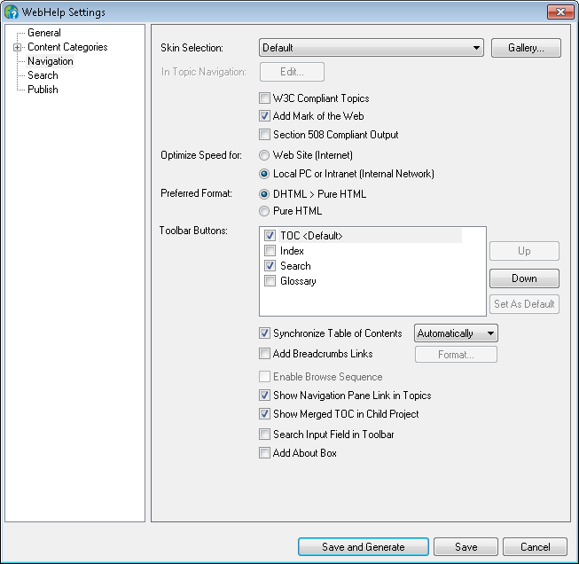
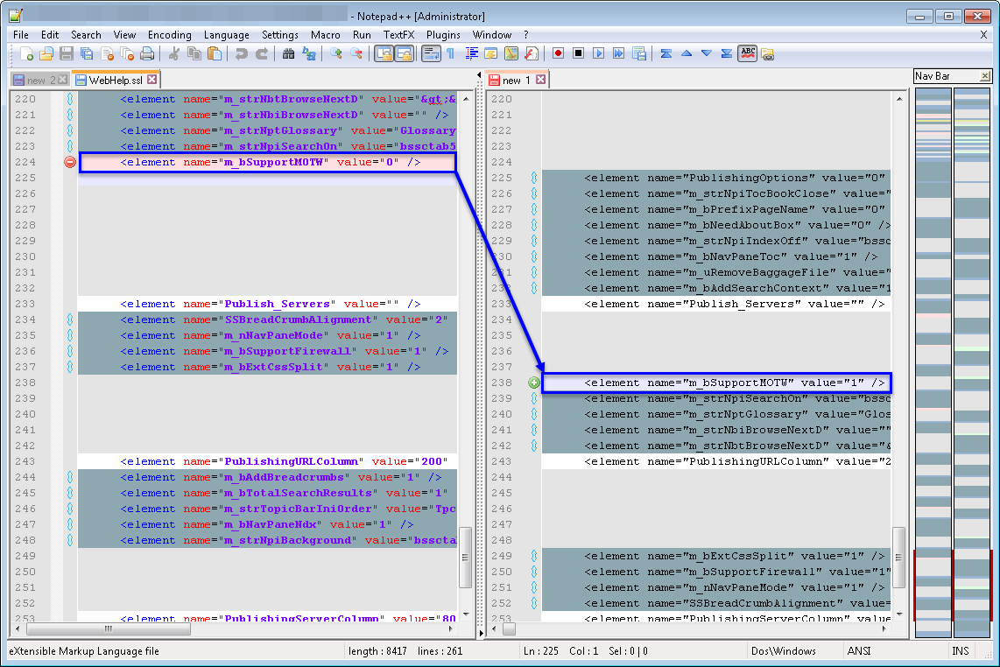
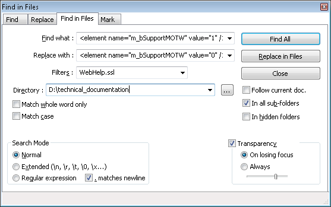

RoboHelp: Making Bulk SSL Changes
Published: 2016-04-08
RoboHelp's interface is pretty intuitive, and once you understand what each option does it's not difficult to generate an online help system. But what do you do if you have to make a lot of changes - like, for example, modifying a setting in WebHelp for 40 modules? The "simple" option is to open each module, double-click the SSL, navigate to the corresponding wizard page, make the change, save, open the next module... and so on, 40 times. The smarter option is realizing that (like most of RoboHelp's files) the SSL is a relatively-simple-to-manipulate XML.
This method can be used for any of the settings visible in the GUI (and even for some that are not visible). In the following example I will assume that I have several modules, with at least one SSL defined for each, and that I'm trying to deactivate Mark of the Web for all of them.
In short, we will compare the XML with Mark of the Web turned on and the XML with Mark of the Web turned off and we will then use search & replace to change the option in all modules.
-
From the source folder of one of the RoboHelp projects, open the file
<SSL_name>.sslin a text editor (I use Notepad++. You will get something like this:
-
Open an empty document or tab and copy the entire contents of the file in it. You need to do this because the next steps will change the initial XML and you need both versions for the comparison.
-
In RoboHelp, open the respective project and double-click the same SSL you used at step 1.

-
Change the options as needed - in my case, I cleared Mark of the Web. (You can change multiple options at the same time, but you risk getting confused, so it's safest to take them one by one.)
-
Save the SSL. The XML at step 1 is immediately modified and you now have two versions of the same file - a
beforeand anafter. -
Identify the modified row. In Notepad++, I use a plugin called Compare. If I select Plugins > Compare > Compare, Notepad++ compares the last two files opened and highlights the changes. Be careful though, because (for reasons that escape me) some rows are rearranged the moment the SSL is saved, so you will see a lot of apparent changes that are actually irrelevant to what we are trying to do. Either way, the files are not big and it's fairly easy to find the row with the modified value by simply scrolling and eyeballing it.

As you can see,<element name="m_bSupportMOTW" value="1">in the initial file means that Mark of the Web is on, while<element name="m_bSupportMOTW" value="o">means that it's off. -
Replace the old row with the new one in all relevant SSLs. In Notepad++, that can look like this:

...which translates as:
-
Replace
<element name="m_bSupportMOTW" value="1" />with<element name="m_bSupportMOTW" value="o" />... -
...in all files called
WebHelp.ssl... -
...located in
D:\technical_documentation_or one of its subfolders.
-
Tada! It all took 5 minutes in total, and you can continue by using a script to regenerate the entire help with the new option.